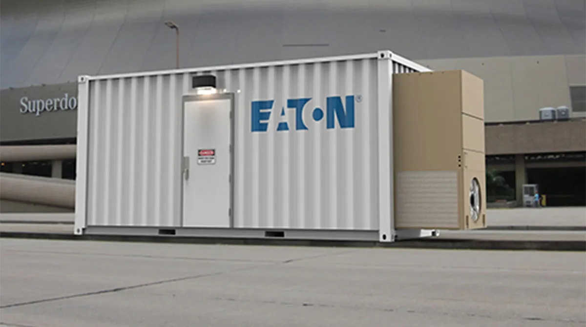
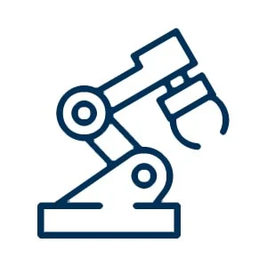

Eaton (ETN)
W kontekście: Naziemny bottleneck energetyczny i sieciowy
Eaton to jeden z fundamentalnych dostawców infrastruktury zasilania dla centrów danych - dokładnie tej warstwy, która staje się wąskim gardłem rozbudowy compute AI. Spółka oferuje pełny łańcuch "grid-to-chip": zasilacze awaryjne UPS (np. seria 9395XC/XR), rozdzielnice i switchgear średniego oraz niskiego napięcia, jednostki dystrybucji mocy PDU/EPDU, transfer switches, prefabrykowane moduły zasilania (Power Train Units, Fibrebond), transformatory (Resilient Power Systems) oraz oprogramowanie Brightlayer Data Centers. To dokładnie te komponenty, których niedobór opisuje wątek Brak transformatorów i switchgear: lead times - rosnące lead times na transformatory i switchgear przekładają się wprost na opóźnienia uruchamiania mocy w DC, co dla Eatona oznacza popyt przewyższający podaż.
Skala tego popytu jest widoczna w wynikach: w Q4 2025 (raport 3 lutego 2026) zamówienia z segmentu data center wzrosły około 200% r/r, a przychody z data center około 40% r/r (Q4 2025 earnings release, 3 lutego 2026). Eaton adresuje również sam korzeń bottlenecku po stronie wytwarzania - poprzez współpracę z Siemens Energy nad modułową elektrownią gazową 500 MW dedykowaną centrom danych, co łączy się z wątkami Energia: baseload, powrót do gazu/jądra, SMR dla DC oraz Kolejki przyłączeniowe i ograniczenia sieci. Przewaga Eatona to ponad stuletnie dziedzictwo w zarządzaniu energią, kompletny portfel od sieci po szafę IT oraz rozwiązania jak Power Xpert PXQ wykrywające "AI power bursts" - gwałtowne skoki poboru mocy typowe dla klastrów GPU.
Dla inwestora: ekspozycja na "naziemny bottleneck" to rdzeń, a nie linia poboczna - data center i distributed IT miały stanowić około 17% sprzedaży do końca 2025 r., a według prezentacji end-market na 2026 kategoria "Data Centers & Distributed IT" jest szacowana na około 21% sprzedaży z silnym wzrostem dwucyfrowym (prezentacje end-market Eaton). Dokładny przychód w USD z tej kategorii: NIE UJAWNIONE.
Materiały spółki
Grafiki z materiałów spółki / IR (prawa właściciela, użycie redakcyjne). Pełny rejestr:
Spolki/assets/_licencje.json.

1 | ` | Eaton power block - zdjęcie produktowe ilustrujące modułową infrastrukturę zasilania data center (źródło: TTNews / Eaton Corp). Źródło: materiały spółki / IR; licencja: materiały spółki / IR - prawa właściciela, użycie redakcyjne.
2 | ` | Grafika informacyjna o przejęciu Boyd Thermal przez Eaton za $9,5 mld - rozszerzenie portfolio liquid cooling (źródło: Power Systems Technology). Źródło: materiały spółki / IR; licencja: materiały spółki / IR - prawa właściciela, użycie redakcyjne.

3 | ` | Grafika produktowa Boyd aerospace/space - lekkie systemy chłodzenia, heat pipes i transport ciepła do radiatorów satelitarnych (źródło: Boyd Corp). Źródło: materiały spółki / IR; licencja: materiały spółki / IR - prawa właściciela, użycie redakcyjne.
W kontekście: Chłodzenie i radiacyjne odprowadzanie ciepła
Druga noga ekspozycji Eatona to chłodzenie - kompetencja zdobyta skokowo przez przejęcie Boyd Thermal (wcześniej Boyd Corporation / Aavid Thermal), zamknięte w marcu 2026 za 9,5 mld USD (22,5x szacowane EBITDA 2026) (komunikat o przejęciu, marzec 2026). Boyd wnosi pełne spektrum technologii termicznych: direct-to-chip liquid cooling, cold plates, rack CDU, immersion cooling, a także pasywne systemy dla kosmosu - heat pipes (miedziano-wodne, aluminiowo-amoniakowe, wysokotemperaturowe, kriogeniczne), loop heat pipes, panele radiatorowe oraz thermal straps z grafitu k-Core. To wprost odpowiedź na mechanizm opisany w Gęstość mocy chipów AI a ekstrakcja ciepła bez wody i powietrza - gęstości mocy GPU wykraczają poza możliwości chłodzenia powietrznego, wymuszając przejście na ciecz.
W warstwie kosmicznej Boyd/Aavid to jeden z wiodących dostawców pasywnych systemów termicznych dla satelitów, z dekadami space heritage i produktami kwalifikowanymi do lotów (NASA, ESA, konstelacje komercyjne), opartymi na technologiach bez ruchomych części - co rozwija wątki Technologie: heat pipes, pętle, układy dwufazowe i radiatory rozkładane oraz Dziedzictwo ISS: pętle amoniakalne w skali kilowatów, skalowane do MW. Strategicznie Eaton buduje wyróżnik "power + liquid cooling from chip to grid".
Dla inwestora: w skali całego Eatona ta ekspozycja jest na razie marginalna. Boyd Thermal ma prognozować 1,7 mld USD sprzedaży w 2026 r., z czego 1,5 mld USD to liquid cooling dla data center - około 5,5% przychodów pro-forma wobec 27,4 mld USD (komunikat o przejęciu / wyniki FY2025). Udział części kosmicznej wewnątrz Boyd: NIE UJAWNIONE.
Pozycja rynkowa
Eaton jest zdywersyfikowanym koncernem zarządzania energią o przychodzie 27,4 mld USD w FY2025 (+10% r/r) i rekordowej marży segmentowej 24,5% (wyniki FY2025). Największy segment, Electrical Americas, odpowiadał za 13,276 mld USD (48,4% całości), a Electrical Global za 6,815 mld USD (24,8%) - to właśnie w tych segmentach koncentruje się ekspozycja na data center (segment disclosure 10-K / EDGAR oraz Q4 2025 earnings release). Pozostałe segmenty to Aerospace (4,249 mld USD, 15,5%), Vehicle (2,505 mld USD, 9,1%) i eMobility (0,604 mld USD, 2,2%).
W zasilaniu data center Eaton plasuje się w globalnym top-3/-5 dostawców kompletnej infrastruktury (UPS, switchgear, PDU, prefabrykowane moduły), konkurując głównie ze Schneider Electric, Vertiv i ABB (F1 / dane spółki). W chłodzeniu - po przejęciu Boyd Thermal - wchodzi w szereg wiodących dostawców termicznych dla aeronautyki i kosmosu (konkurenci: Honeywell, Collins Aerospace, Parker Hannifin, Advanced Cooling Technologies) oraz w liquid cooling dla AI (Vertiv, Schneider/Motivair, CoolIT, ZutaCore).
Ryzyka
Pierwsze ryzyko to cykl capex hyperscalerów i koncentracja klientów. W 2024 r. 26% sprzedaży segmentów Electrical Americas/Global przypadało na 8 dużych klientów (F1 / dane spółki). Mechanizm: gwałtowne spowolnienie inwestycji cloud/AI albo zmiana standardów GPU obniżyłyby popyt na UPS, switchgear i liquid cooling - przy obecnej dynamice zamówień data center około 200% r/r ewentualne odwrócenie cyklu uderzyłoby w przychody i wykorzystanie nowych mocy produkcyjnych.
Drugie ryzyko to wykonanie i wycena przejęcia Boyd Thermal. Transakcja warta 9,5 mld USD przy 22,5x szacowanego EBITDA 2026 zamknęła się w marcu 2026 (komunikat o przejęciu, marzec 2026). Mechanizm: wysoka cena podnosi poprzeczkę dla synergii, a ryzyko integracji oraz presja na marżę z rampy nowych fabryk chłodzenia cieczowego mogą obciążyć wyniki w latach 2026-2027. Jeśli liquid cooling nie zrealizuje prognozowanych 1,5 mld USD sprzedaży w 2026 r., zwrot z przejęcia będzie pod presją.
Powiązane spółki
Inne notowane spółki z raportu dzielące z tą firmą co najmniej jeden wątek tematyczny (wspólny rynek, technologia lub łańcuch wartości).
- Vertiv Holdings Co (VRT) - Zasilanie i precyzyjne/cieczowe chłodzenie DC
Wspólne wątki: Naziemny bottleneck; Chłodzenie. - Airbus SE (AIR) - PV (Sparkwing), optyka (Tesat), busy, serwis (EU)
Wspólne wątki: Chłodzenie. - Bloom Energy Corporation (BE) - Ogniwa paliwowe SOFC dla centrów danych
Wspólne wątki: Naziemny bottleneck. - Constellation Energy Corporation (CEG) - Największy operator floty jądrowej w USA (PPA z hyperskalerami)
Wspólne wątki: Naziemny bottleneck. - GE Vernova Inc. (GEV) - Turbiny gazowe i infrastruktura sieciowa dla DC
Wspólne wątki: Naziemny bottleneck. - Northrop Grumman Corporation (NOC) - Serwis GEO (MEV/MRV), busy, radiatory, ogniwa
Wspólne wątki: Chłodzenie. - Oklo Inc. (OKLO) - Mikroreaktory (SMR/fission) na potrzeby DC
Wspólne wątki: Naziemny bottleneck. - RTX Corporation (RTX) - ADCS (Blue Canyon), termika (Collins Aerospace)
Wspólne wątki: Chłodzenie. - Redwire Corporation (RDW) - Panele ROSA, struktury rozkładane, montaż on-orbit, radiatory Q-Rad
Wspólne wątki: Chłodzenie. - Schneider Electric SE (SU) - Zasilanie i chłodzenie DC (EcoStruxure, Motivair)
Wspólne wątki: Naziemny bottleneck. - Siemens Energy AG (ENR) - Turbiny gazowe i technologie sieciowe (EU)
Wspólne wątki: Naziemny bottleneck. - Talen Energy Corporation (TLN) - Energia jądrowa (Susquehanna), sąsiedztwo z DC
Wspólne wątki: Naziemny bottleneck.
Linkują tutaj
15 powiązanych notatek
- Mapa raportu Orbitalne / kosmiczne centra danych
- Sekcja Chłodzenie i radiacyjne odprowadzanie ciepła
- Sekcja Naziemny bottleneck energetyczny i sieciowy
- Spółka Airbus (AIR)
- Spółka Bloom Energy (BE)
- Spółka Constellation Energy (CEG)
- Spółka GE Vernova (GEV)
- Spółka Northrop Grumman (NOC)
- Spółka Oklo (OKLO)
- Spółka Redwire (RDW)
- Spółka RTX (RTX)
- Spółka Schneider Electric (SU)
- Spółka Siemens Energy (ENR)
- Spółka Talen Energy (TLN)
- Spółka Vertiv (VRT)